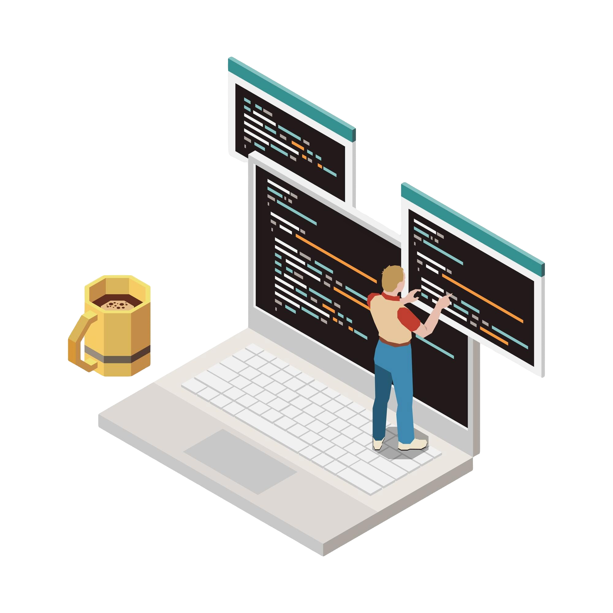

Nice to meet you. You can get to know me here :)
Hi, I’m Daivik Saharan, a passionate Full-Stack Web Developer with expertise in Java, Python, JavaScript, Angular, Spring Boot, and modern tools like Docker, AWS, and Git. I’m currently pursuing a Master of Applied Computer Science at Concordia University (GPA: 3.90/4.30) while honing my skills through impactful projects and professional experiences.
I’ve optimized web applications at Infosys, enhanced productivity tools as a Front-End Engineer Intern, and mentored students as a Teaching Assistant. My projects showcase a strong foundation in data structures, scalable system design, and responsive UI development, delivering measurable improvements in performance and user experience.
Let’s connect to build something extraordinary! Explore my work on GitHub or reach out via LinkedIn.
